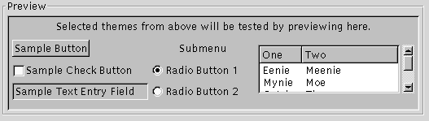

Keyboard Accessibility - What Does It Mean?
- Navigation : between workspaces, applications, windows and widgets
- Accelerators : Ctrl+C, Ctrl+X, Ctrl+V etc.
- Shortcuts : File, Edit, View, Help
- Direct manipulation : moving and resizing windows etc. with the keyboard
- Showing keyboard focus : the focused widget must be clearly-discernible.
E.g. Which control has focus in this familiar example?

Next